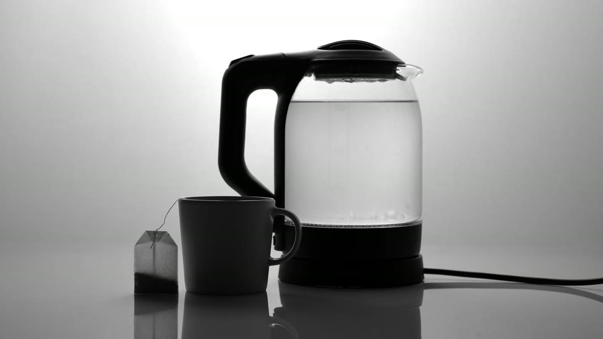
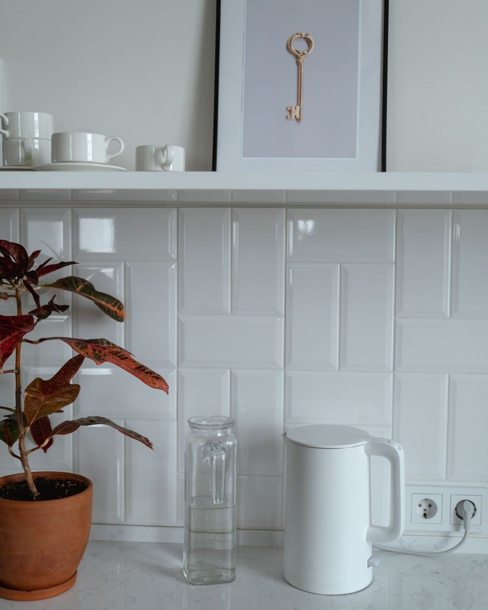
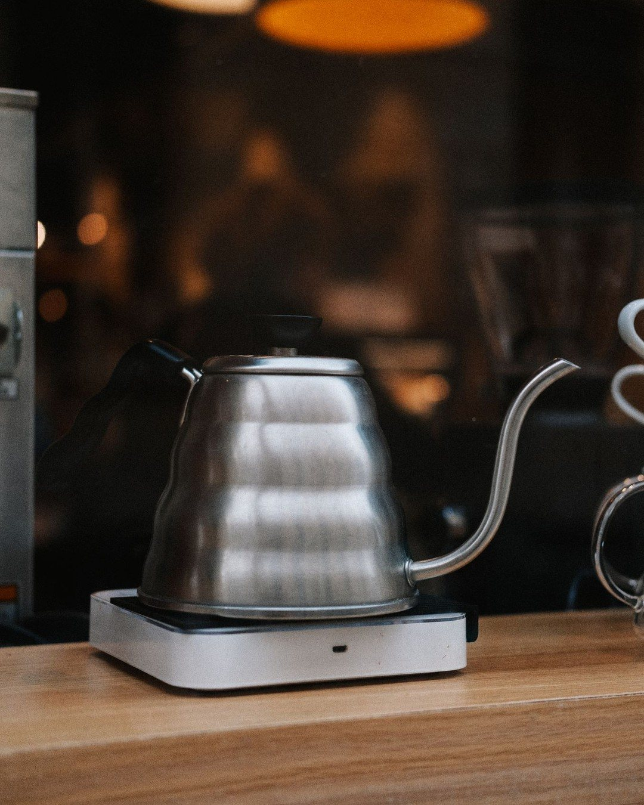
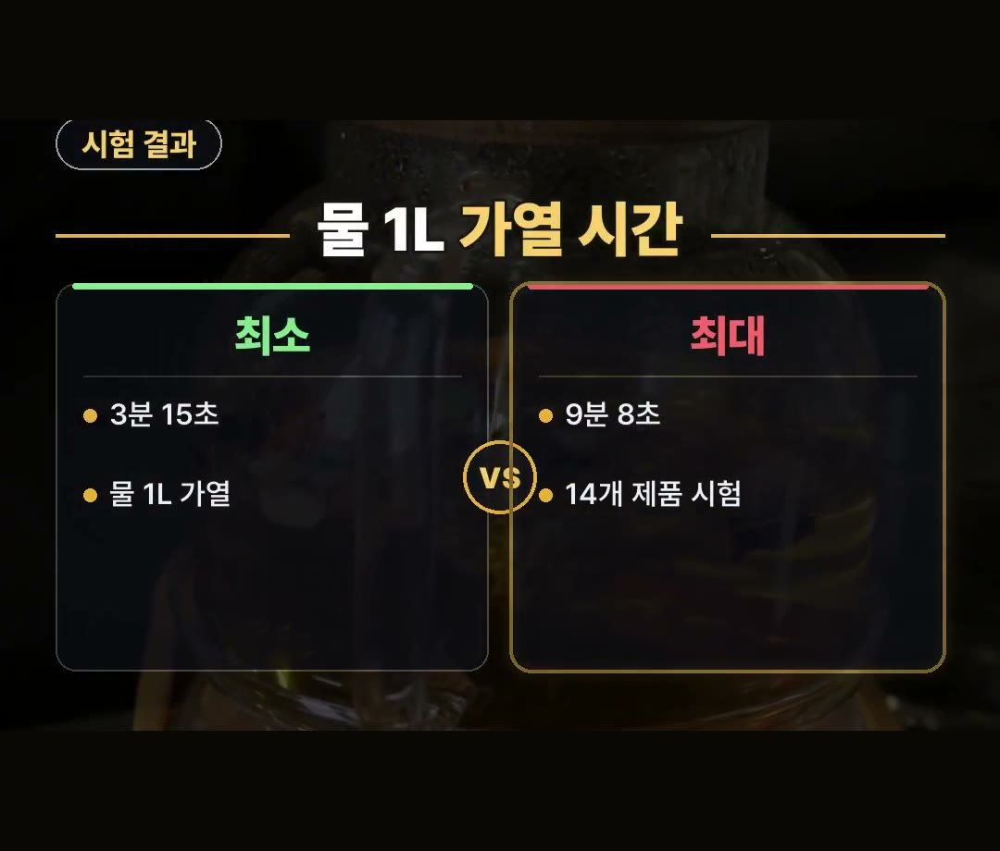
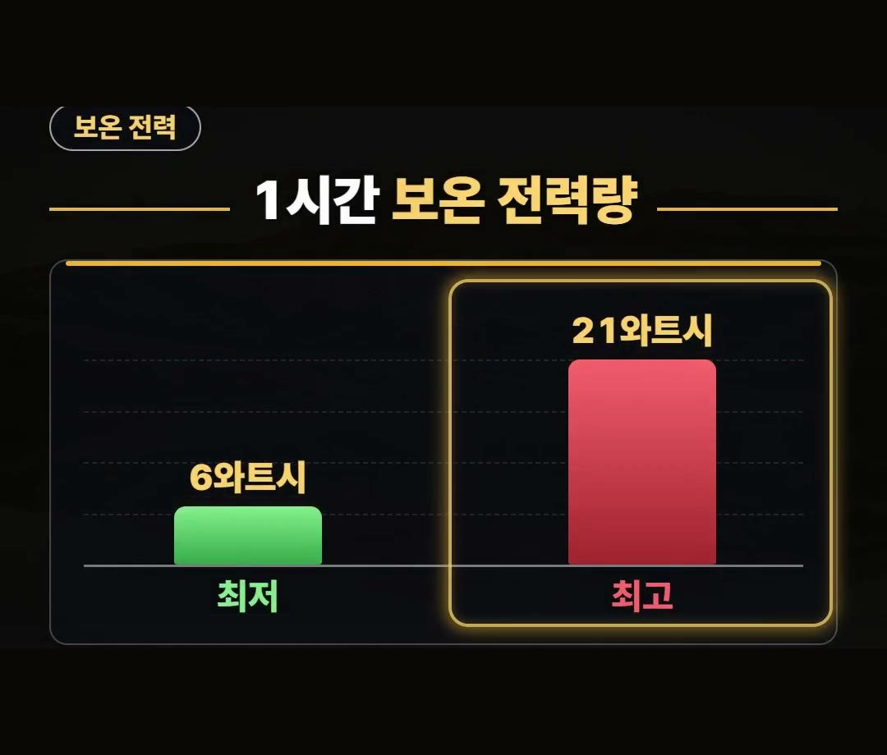
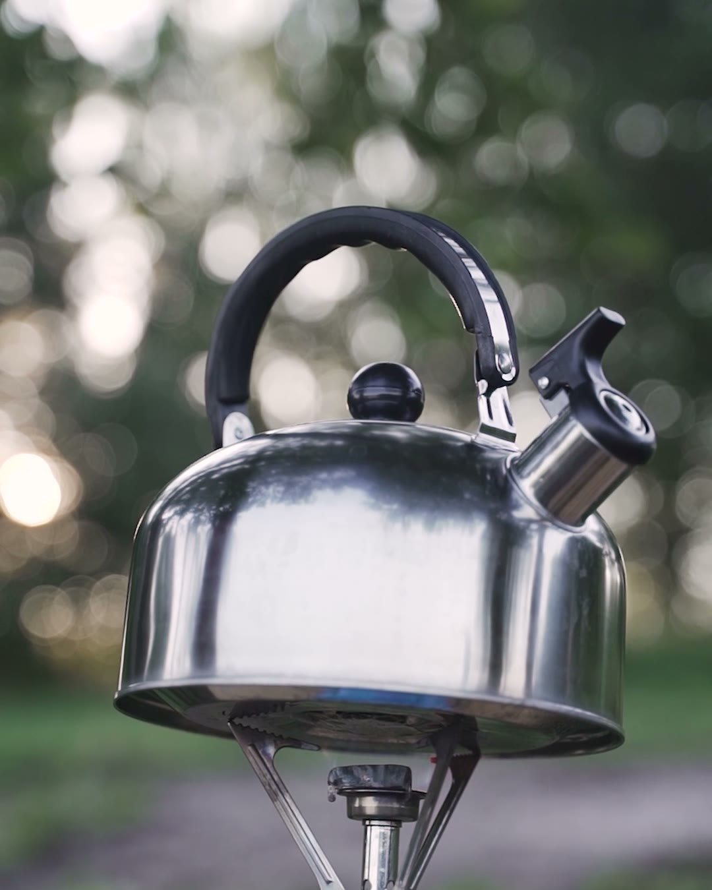
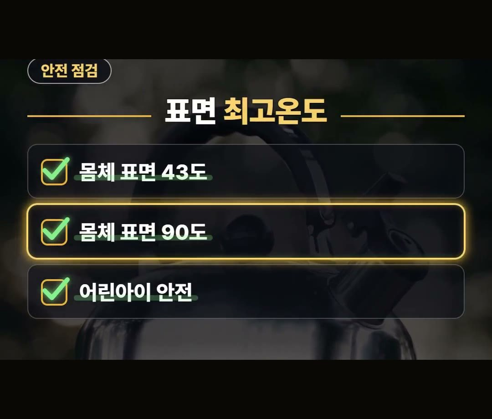

전기포트 전기세, 2022년 소비자원 시험에서 보온 전력량 최대 3.5배 차이
※ 이 글에는 제휴 링크가 포함되어 있으며, 링크를 통해 구매하시면 일정 수수료를 받을 수 있습니다. (가격은 같습니다)
※ 이 포스팅은 쿠팡 파트너스 활동의 일환으로, 이에 따른 일정액의 수수료를 제공받습니다.
2022년 한국소비자원이 전기포트 14개를 시험했더니, 40도로 1시간 보온할 때 쓰는 전력량이 6~21Wh로 최대 3.5배 차이가 났습니다.
전기포트 전기세가 궁금해서 끓이는 전기만 걱정하셨다면, 이 글에서 시험 숫자를 같이 살펴보세요.
사기 전에 어떤 숫자를 볼지, 사용 습관별로 나눠 정리했습니다.
안녕하세요, 돈 아끼는 연구소 아낌 소장이에요!
한국소비자원 2022년 시험 자료를 바탕으로 정리해 봤어요.
꼭 기억할 건 하나예요.
14개 제품 시험에서 40도로 1시간 보온하는 전력량이 6~21Wh, 최대 3.5배 차이였다는 점이에요 💡

전기포트 전기세, 끓이는 전기부터 볼까요

전기포트를 고를 때 많은 분이 먼저 '물을 끓이는 데 전기가 얼마나 들까'를 떠올립니다.
그런데 한국소비자원 시험에서는 물 1리터를 끓일 때의 에너지 소비량이 제품끼리 비슷했습니다.

그러니 끓이는 전기가 걱정돼서 제품을 고르기 어려웠다면, 이 시험 결과로는 그 부분의 차이가 크지 않았다고 보시면 됩니다.
물 1L 가열 시간은 차이가 컸어요
2022년 14개 제품 시험에서 물 1리터를 끓이는 데 걸린 시간은 이렇습니다.
- 가장 짧은 제품: 3분 15초
- 가장 긴 제품: 9분 8초
- 시험 대상: 전기포트 14개


시간은 6분 가까이 차이가 났지만, 앞에서 말씀드린 대로 에너지 소비량은 비슷했습니다.
빨리 끓는다고 전기를 더 쓰거나, 늦게 끓는다고 덜 쓰는 것은 아니라는 뜻입니다.
가열 시간은 기다리는 시간의 차이로 보시면 돼요.
차이가 난 곳은 보온 전력량이에요
차이는 보온에서 났습니다.
같은 시험에서 40도로 1시간 보온하는 전력량은 다음과 같았어요.
- 가장 적은 제품: 6Wh
- 가장 많은 제품: 21Wh
- 차이: 최대 3.5배

보온 기능을 자주 쓴다면 이 숫자가 전기포트 전기세와 이어질 수 있어서, 제품 사양을 볼 때 가열 시간만큼 보온 전력량도 같이 살펴보시면 좋겠습니다.
전기포트 추천 전에 볼 기준, 우리 집 사용 습관
전기포트 추천 글을 찾기 전에, 먼저 우리 집이 물을 어떻게 쓰는지 떠올려 보세요.
고르는 법을 두 가지 경우로 나눠 정리했습니다.
- 물을 자주 데워 두는 집: 보온 전력량이 적은 제품이 맞습니다.
- 물을 가끔 끓이는 집: 보온 기능에 돈을 더 쓸 필요는 없습니다.
물을 가끔만 끓인다면 보온 기능 때문에 값이 더 나가는 제품을 고를 이유가 크지 않다는 이야기예요.
반대로 보온을 자주 쓴다면 앞에서 본 6~21Wh 숫자를 확인해 보세요.
어린아이가 있다면 표면 최고온도도 확인하세요
같은 시험에서 가열할 때 몸체 표면 최고온도는 43도에서 90도까지 측정됐습니다.
제품에 따라 겉면 온도가 꽤 다르다는 뜻이에요.


어린아이가 있는 집이라면 전기포트 전기세만큼 표면 온도도 따져 보시면 좋겠습니다.
안전과 관련된 부분이라 가격이나 가열 시간보다 먼저 확인해 보셔도 괜찮아요.
정리
- 2022년 한국소비자원 14개 제품 시험에서 물 1리터 가열 시간은 3분 15초~9분 8초로 차이가 컸지만, 에너지 소비량은 비슷했습니다.
- 40도 1시간 보온 전력량은 6~21Wh로 최대 3.5배 차이가 났으니, 물을 자주 데워 두는 집은 이 숫자를 보세요.
- 가열할 때 몸체 표면 최고온도는 43~90도까지 측정됐으니, 어린아이가 있는 집은 표면 온도도 확인해 보세요.
링크는 아래에 모아 두었어요.
📌 2026년 10월 기준 정보예요. 가격은 시기에 따라 달라질 수 있어요.
· 한국소비자원 전기포트 비교 보도자료(2022-09-20)
사진·영상영상 화면: Pexels (Adem Albayrak, Engin Akyurt, Fernanda Neitzel, Pavel Danilyuk, ROMAN ODINTSOV, Thirdman)
사진: Pexels (cottonbro studio, Mathias Reding)